在 windows 中透過構建虛擬機使用 linux 系統
為什麼需要虛擬機？
我們從小到大都在使用 windows 的作業系統，但在程式開發時，各大公司或團隊最常使用的是 linux 系統，這時就可以用虛擬機，在 windows 中，建立一台虛擬機，然後虛擬機上是 linux 系統，可以用來進行學習與培訓
VMware Workstation Player
免費的虛擬機軟體，是VMware Workstation（付費版本）的精簡版，安裝VMware Workstation Player之後，可以在你的電腦新增多部的虛擬機器（或稱「虛擬電腦」），在虛擬機器中可以安裝不同的作業系統，例如：Windows、Linux…等；也可以安裝任何的軟體，就好像在使用實體電腦一樣。
下載
連結到官方網站，點選「下載」，選擇「免費產品下載」的「Workstation Player」
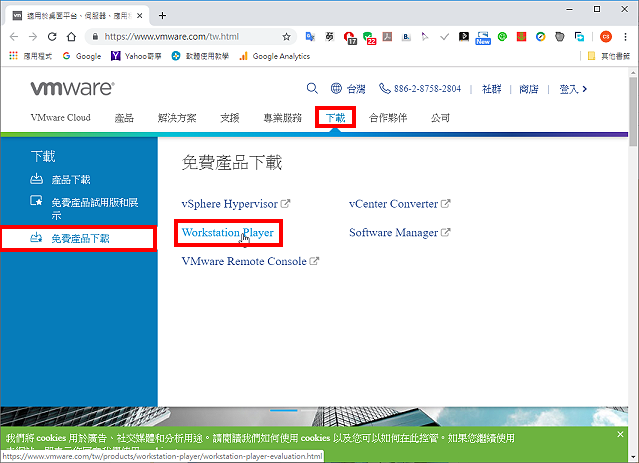
對著Windows的安裝版本，點選「立即下載」；如果你的作業系統是Linux，就下載適用於Linux的版本
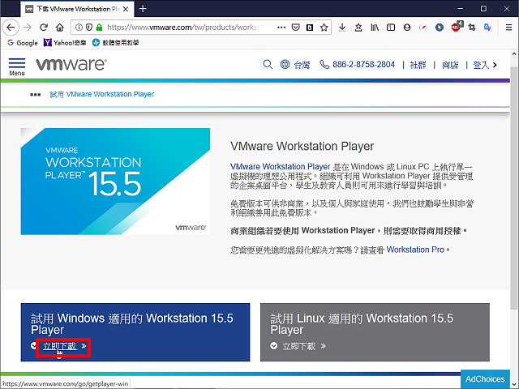
下載完成以後，開啟檔案總管，對著下載的檔案連續按兩下滑鼠左鍵，準備進行安裝。
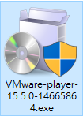
安裝
點選「Next」
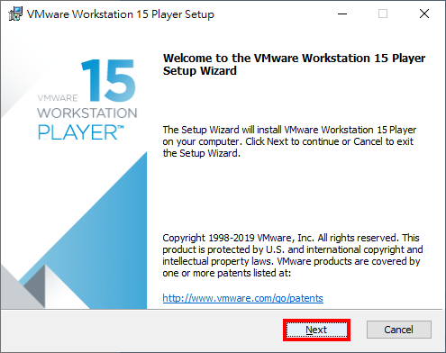
選擇「I accept the terms in the License Agreement.」，點選「Next」。
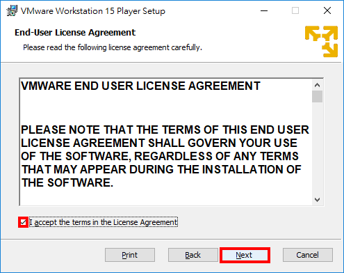
勾選「Enhanced Keyboard Driver」，點選「Next」。
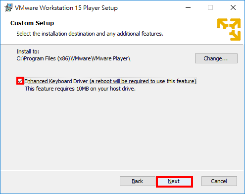
使用預設的選項，點選「Next」。如果你不想協助改善軟體就取消勾選「Join the VMware Customer Experience Improvement Program」。
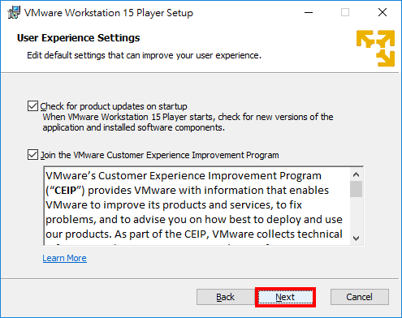
使用預設選項，建立桌面捷徑與開始程式資料夾，點選「Next」。
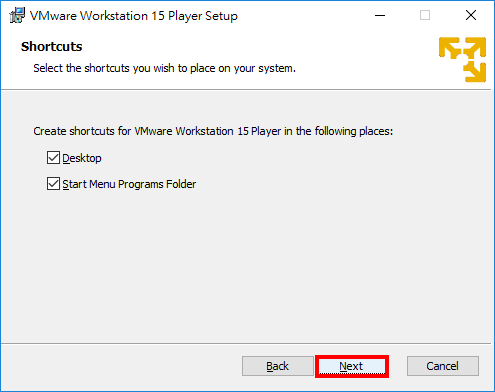
點選「Install」。
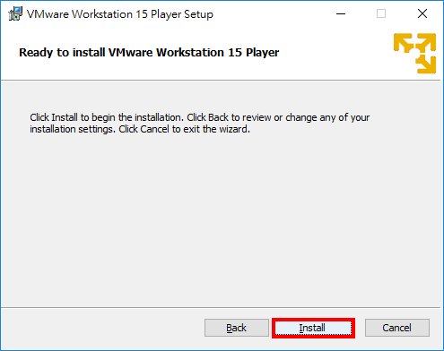
正在安裝VMware Workstation Player。
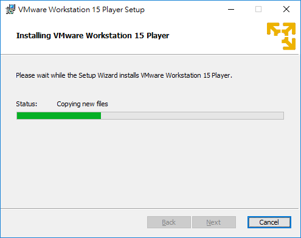
安裝完成，點選「Finish」。
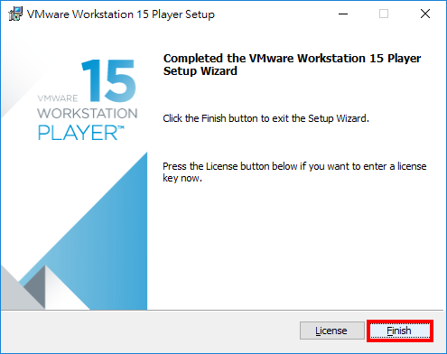
點選「Yes」，重新開機。
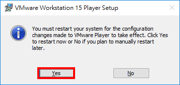
第一次啟動
對著桌面的捷徑圖示，連續按兩下滑鼠左鍵，開啟VMware Workstation 15 Player。
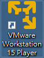
使用預設的選項，點選「Continue」，使用免費版本。
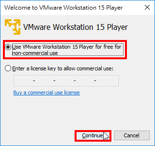
點選「Finish」。
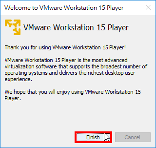
建立虛擬機
VMware Workstation 15 Player開啟的視窗如圖示，點選「Create a New Virtual Machine」，可以建立虛擬機器，並在虛擬機器上安裝作業系統。
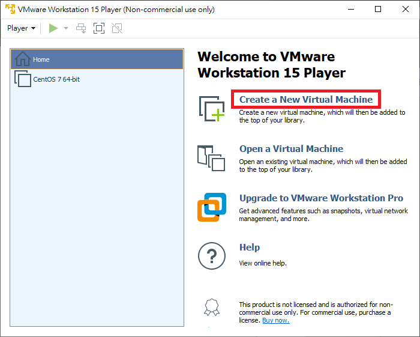
選擇稍後安裝作業系統，然後點擊「下一步」
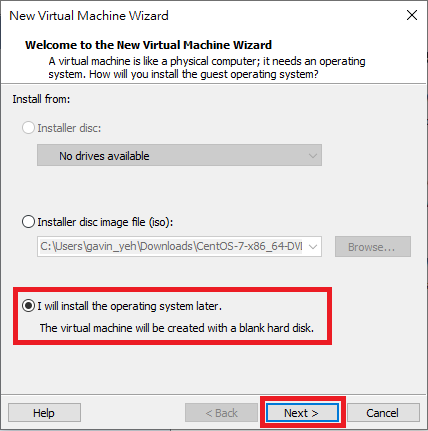
選擇作業系統與作業系統版本，然後點擊「下一步」
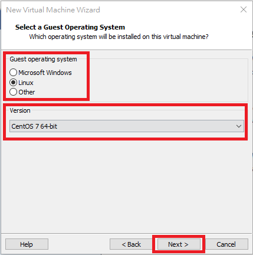
可以修改虛擬機名稱與安裝路徑，然後點擊「下一步」
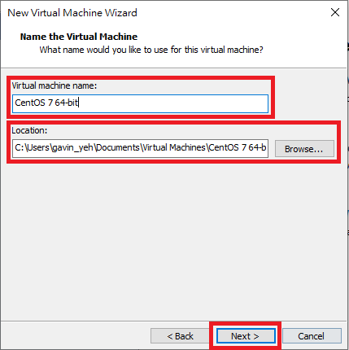
可以修改磁盤容量大小，並選擇虛擬磁盤儲存為單個文件，然後點擊「下一步」
> 拆分磁盤後，可以更輕鬆的在計算機之間移動虛擬機，但可能會降低大容量磁盤的性能
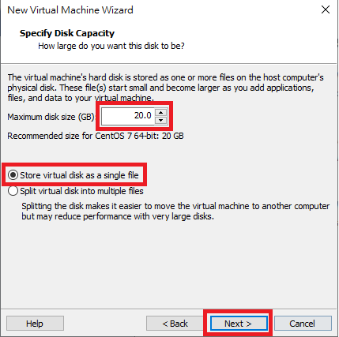
點擊「完成」
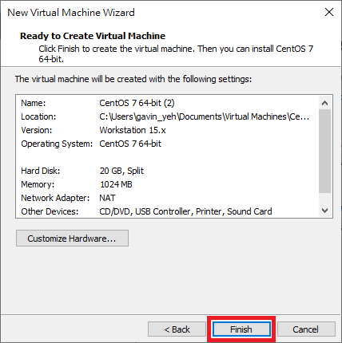
點擊「編輯虛擬機設定」
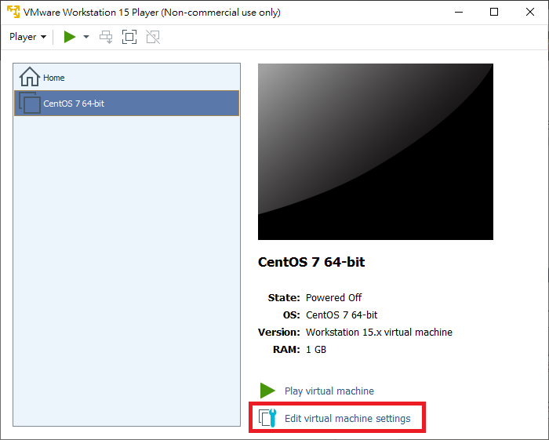
在此介面可以自定義內存、CPU等大小，然後選中新CD/DVD，選擇剛才下載的鏡像文件，然後點擊「關閉」
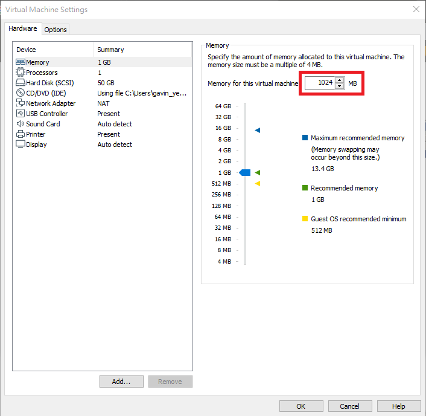
使用 ISO 映像檔，並選擇檔案位置，點擊「完成」
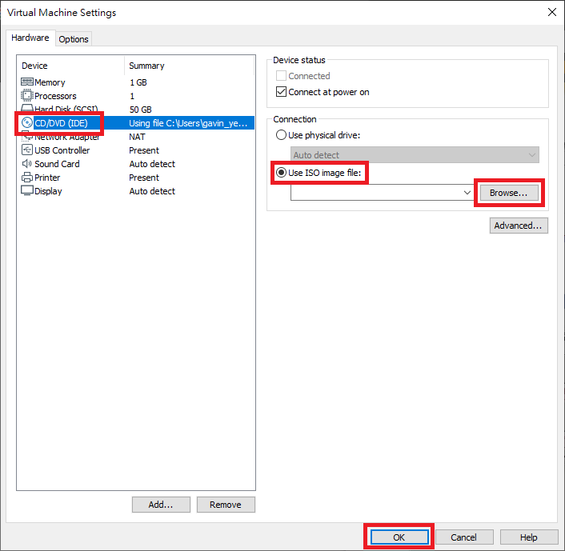
常見問題
滑鼠不見了怎麼辦？
ctrl + alt